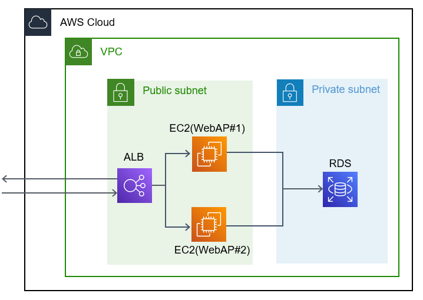

3. モノリシックアーキ環境の構築
【目的】 ・モノリシックアーキの構築を通して、AWSでの環境構築を経験する。 ・アプリケーションのデプロイ方法を習得する。
環境構成は以下の通り。 
サンプルアプリケーションは以下のものを使用する。 http:~~
3.1. VPC・サブネットの作成
下記の記事を参照 https://news.mynavi.jp/itsearch/article/devsoft/4354
VPCは元々作成済みのため、サブネットの作成のみ実施
3.2. ALBの作成
下記の記事を参照 https://news.mynavi.jp/itsearch/article/devsoft/4359
手順は2年前のということもあり、作成手順がアップデートされたためか ALB作成時に事前にターゲットグループの作成が必要だった。 インスタンス向けのHTTP:80をpublic、private両面で作成を実施。